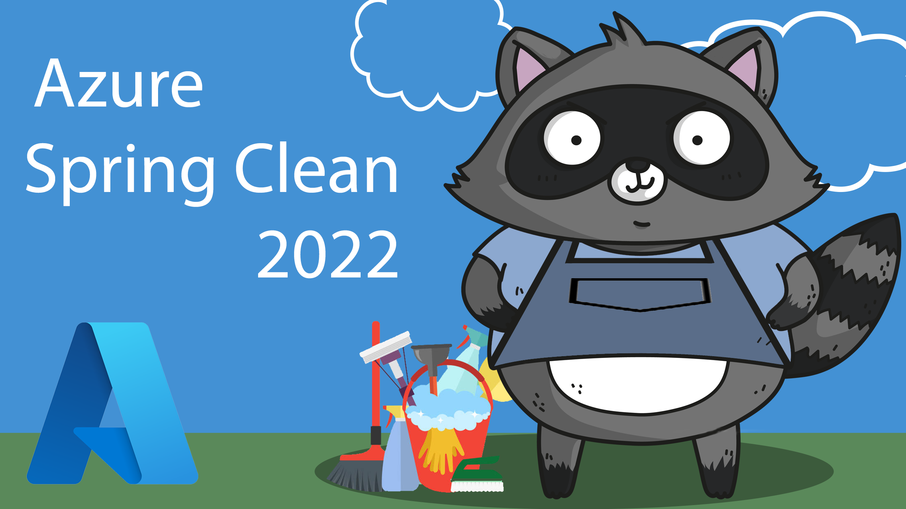
Hey friends,
Welcome to #AzureSpringClean, an initiative from Joe Carlyle and Thomas Thornton which celebrates its 3rd edition this year. I’m thrilled to be part of this again as well, helping you understanding the confusion and difference between Azure Service Principals and Azure Managed Identities. As I recently relocated from Belgium to Redmond, and didn’t have all my video/audio equipment up for a recording, I decided to share this information in a blog post.
I hope you learn from it, enjoy reading through and got inspired to check back the whole week here at Azure Spring Clean, as there are A TON of great topics that will be covered.
In this article, I want to clarify one of the more confusing concepts in Azure and more specifically around the Azure Identity objects known as Service Principals and Managed Identities.
In essence, those objects are not really different from the concept of a traditional (Azure) Identity object, which are available in Azure Active Directory already.
Azure Active Directory
Azure AD is the Microsoft Azure cloud trusted Identity Object store, in which you create different Identity Object types. The most common ones are Users and Groups, but you can also have Applications in there, also known as Enterprise Apps.
An example for each could be:
- Users: this is where you create regular user accounts, allowing them to authenticate to the Azure Portal, to start using Office 365,…
- Groups: you define a security group in Azure AD, reflecting a group of users such as “DevOps team”
- Enterprise Apps: using OpenIDConnect and OAuth, you allow a cloud-based application to trust your Azure AD for user authentication; the trusting app is known as an enterprise app object in Azure AD.
With that out of the way, let’s focus on the main topic of the article, detailing what a Service Principal is about:
Service Principal
Most relevant to Service Principal, is the Enterprise apps; according to the formal definition, a service principal is “…An application whose tokens can be used to authenticate and grant access to specific Azure resources from a user-app, service or automation tool, when an organization is using Azure Active Directory…”
By using a Service Principal, you create an Identity object, which gets linked to an application or a service. This corresponds to the on-premises concept we have in Active Directory called “service account”, where you would create a SQL Server, Backup Software or any other application user, which would be used to “run” the application.
Another important aspect, since this Service Principal is nothing more but an identity object in Azure AD, you can also restrict the permissions of what this SP can do, by leveraging on Azure RBAC roles . If you want your 3rd party application to only be able to communicate with a specific Azure subscription within your Tenant, or to only update a given Resource Group, that’s what RBAC will control.
Typical use cases where you would rely on a Service Principal is for example when running Terraform IAC (Infrastructure as Code) deployments, or when using Azure DevOps, or technically any other 3rd party application requiring an authentication token to connect to Azure resources.
An Azure Service Principal can be created using “any” traditional way like the Azure Portal, Azure PowerShell, Rest API or Azure CLI. Let me show you the command syntax out of Azure CLI to achieve this:
az ad sp create-for-rbac --name "azurespringclean"
resulting in this outcome:
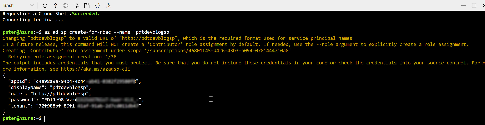
Copy this information aside; in the example of an Azure DevOps Service Connection, this information would be used as follows:
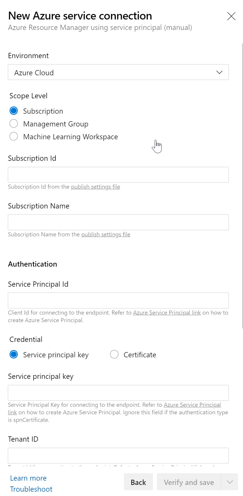
where you just need to copy the correct information in the corresponding parameter fields. Or - since I used Terraform as another example - you would need to provide these details as part of your terraform.tf deployment file, or as a terraform.tfvars variable file), where the syntax would be the following:
Terraform subscription service principal vars
subscription_id = "0a407898-c077-442d-xxxx-xxxxxxxxxxxx"
client_id = "3723bfcc-f0ba-4bba-xxxx-xxxxxxxxxxxx"
client_secret = "b9eab5cb-c1b0-46e6-xxxx-xxxxxxxxxxxx"
tenant_id = "70681eb4-8dbc-4dc2-xxxx-xxxxxxxxxxxx"
NOTE: Keep in mind you are SHARING CREDENTIALS HERE, so depending on the actual application consuming the Service Principal, you need to verify if it is capable of handling these in a secured way. Using the Azure DevOps Service Connection example, that’s totally fine, as ADO encrypts these settings. In the Terraform scenario however, these are stored clear-text in the Terraform deployment script file. WHICH IS A NO GO!! So where possible, try to store the Service Principal credentials in a safe way, like using Azure Key Vault, Terraform Vault,… instead of a clear-text textfile
Apart from the 2 examples I shared, the concept would be the same for about any other 3rd party application you want to have communicating with Azure in this way. However, I noticed that the technical parameter field names sometimes differ a bit from what the Azure CLI command provides as output.
Service Principals are great from a security perspective, if you manage them correctly. It should be clear by now (you read this just a paragraph ago…), there are also some challenges in using Service Principals:
- First, an admin needs to create the Service Principal objects,
- Client ID and Secret are exposed / known to the creator of the Service Principal,
- Client ID and Secret are exposed / known to the consumer of the Service Principal,
- Lifetime of the Service Principal is max. 2 years
Luckily, the story is not complete yet, as that’s where we bring in Managed Identities:
Managed Identities
Managed Identities are in essence 100% identical in functionality and use case than Service Principals. In fact, they are nothing different from Service Principals, although the way you create and manage them are slightly different. In a good way!
- They are always linked to an Azure Resource, not to an application or 3rd party connector
- They are automatically created for you, including the credentials; biggest security advantage is that nobody besides Azure AD itself knows the credentials
Managed Identities exist in 2 different flavors:
-
System assigned; in this scenario, the identity is linked to a single Azure Resource, eg a Virtual Machine, a Logic App, a Storage Account, Web App, Function,… so almost anything, and there is a 1:1 relationship between the Azure Resource and the corresponding Managed Identity. If you delete the Azure Resource, the MI also gets deleted. Which would be a security benefit.
-
User Assigned; In this scenario, an admin user creates a stand-alone Managed Identity object (but no secrets or credentials are exposed here like you saw when creating a Service Principal). Next, you can “link” the User Assigned MI to multiple Azure Resources. A typical example here is a web server farm, who all need to connect to the same Azure Storage Account. Instead of creating 50 System Assigned MI’s for each Virtual Machine, you would need to create only 1 and linking it to all 50 VMs. Interesting enough, there are debates going on which of these scenarios would be the most secure, having a single one or multiple ones. I would say it depends on the requirements of your environment.
Let’s close this post with a practical demo scenario, in which we integrate a Virtual Machine Managed Identity to interact with Azure Key Vault:
(Prerequisite is having an Azure Virtual Machine and Azure Key Vault Resource deployed in your subscription)
- From the Azure Portal, select your deployed Virtual Machine; navigate to settings, Identity and switch its status to On, and save the changes.
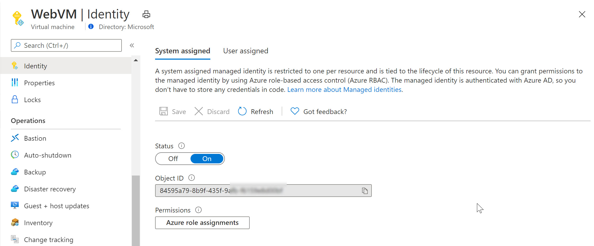
Next, navigate to your Azure Key Vault resource, select Access Policies, followed by configuring this System Assigned Managed Identity having get and list permissions (or any other) for keys, secrets or certificates. Know that you can specify the permissions on the secret-types, but not all the way down to individual secret objects (meaning, if you have multiple secrets or keys in KV, this Managed Identity would be able to use all of them)
Notice how Azure Key Vault is expecting a Service Principal object here (where in reality we are using a Managed Identity).
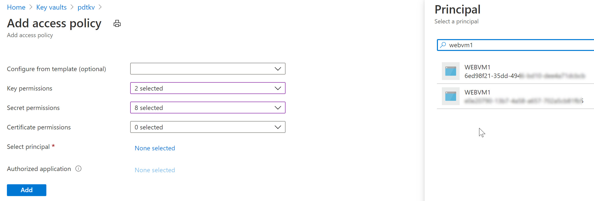
Similarly, let’s remove the System Assigned MI of the VM and use a User Assigned one in the next example (an Azure Resource can only be linked to one or the other, not both…):
- From the Azure Virtual Machine blade settings, switch back to Identity and turn Off the System Assigned configuration.
- This will prompt for your confirmation when saving the settings
- At this time, the System Assigned Managed Identity is already gone from Azure AD.
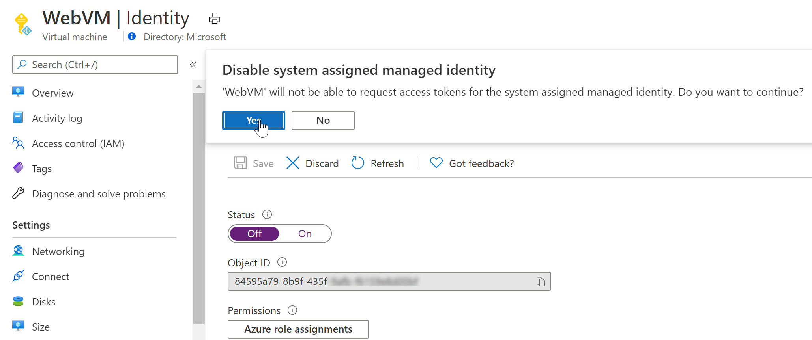
- Wait for the deregistration of the object.
Before we can use the User Assigned Managed Identity, we first need to create it. This can be done as follows:
- From the Azure Portal, select Create new Resource, type “User Assigned Managed Identity” in the search field
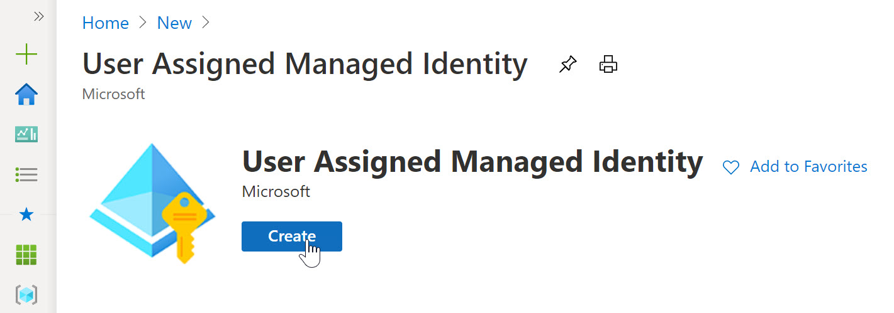
- click Create.
- Specify the Resource Group, Azure Region and Name for this resource.
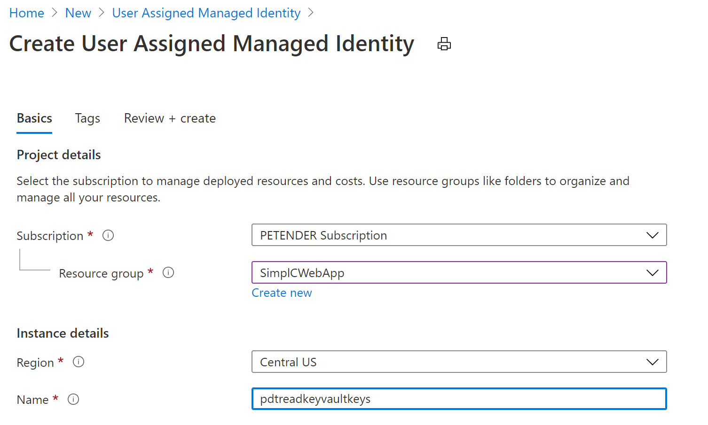
-
Confirm the creation and wait for it to be completed.
-
Once created, switch back to the Azure Virtual Machine, select Identity and this time, make sure you choose User Assigned
-
Recognize the Managed Identity you just created.
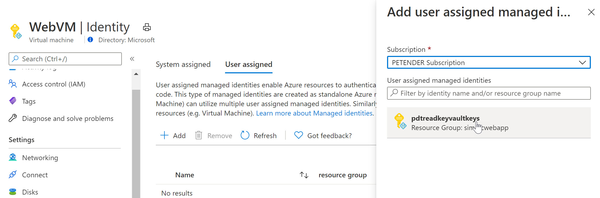
-
Select it and add it as a Virtual Machine User Assigned object.
-
If you have another Azure Resource available in your, for example another Virtual Machine, or an Azure Web App, a FUnction,… and once more selecting Identity from that resource’s settings pane, you will see you can reuse the same Managed Identity as what got already linked to the initial Virtual Machine. Below screenshot shows what it looks like for an Azure Web App Resource:
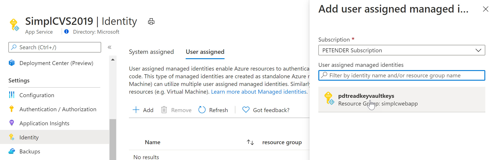
To finish the foreseen scenario, let’s go back to Azure Key Vault, and specify another Access Policy for this User Assigned Managed Identity:
- Select your Azure Key Vault resource, followed by selecting Access Policy from the settings.
- Specify the Key and/or Secret Permissions (for example get, list)
- Click “Select Principal” and search for the User Assigned Managed Identity you created earlier
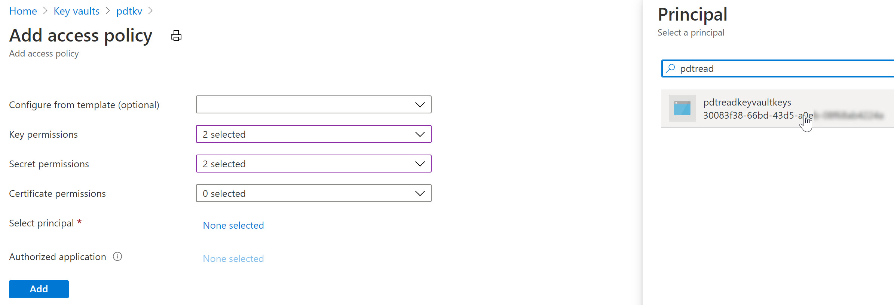
After saving the changes, the result is that now both the Azure Virtual Machine as well as the Web App - having the User Assigned Managed Identity assigned to them - can read our keys and secrets from Azure Key Vault.
What you learned
In this post, I wanted to clarify the use case, difference and similarities between Service Principals and Managed Identities. Both are Azure Identity object, allowing for a secure interaction between 3rd party applications and Azure, or within Azure Resources directly. Depending on the use case, you would use one or the other. If you want to get started with Azure, or want to read more in the official Microsoft docs on the subject, follow the below links:
- Create your Azure Trial subscription from this link:
- Additional reading material on Service Principals
- Additional reading material on Managed Identities**.
Once more, I very appreciated thank you for reading, and for Joe Carlyle and Thomas Thornton for having accepted my submission for this 2022 #AzureSpringClean edition. Enjoy your Spring Clean week, stay safe and healthy!
Peter